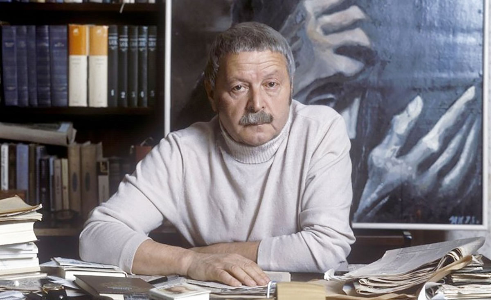

Levitanskij

Chi era Levitanskij?
Jurij Davidovič Levitanskij (1922-1996) è stato un poeta e traduttore russo, noto per le sue riflessioni profonde sulla guerra, la memoria e la condizione umana. Partecipò alla Seconda Guerra Mondiale come corrispondente di guerra, un'esperienza che segnò profondamente la sua vita e la sua produzione letteraria.
Le sue opere sono caratterizzate da una profonda introspezione e da una critica sottile ma potente alla guerra e alle sue conseguenze. Levitanskij credeva che la guerra non fosse mai una scelta, ma qualcosa che inevitabilmente coinvolge e trasforma le persone contro la loro volontà.
"Io non partecipo alla guerra, è la guerra che partecipa me"
Jurij Davidovič Levitanskij
Questa citazione esprime il senso di impotenza e coinvolgimento forzato che molte persone provano durante i conflitti bellici. Levitanskij sottolinea come la guerra non sia mai una scelta attiva, ma un evento che coinvolge e trasforma gli individui indipendentemente dalla loro volontà.
Progetto Simulazione O.N.U.
Il progetto consiste in una simulazione in cui gli studenti interpretano il ruolo di leader di un grande paese che deve prendere posizione sull'adesione a una guerra in corso ai confini del proprio continente durante una conferenza dell'ONU.
Basandoci sulla riflessione di Levitanskij, il progetto esplora le complesse dinamiche che portano un paese a partecipare a un conflitto armato, analizzando le conseguenze etiche, politiche e umanitarie di tale decisione.
Documento di Progetto
Il progetto si conclude con la stesura di un documento che presenta la propria posizione, le argomentazioni a sostegno e una riflessione personale basata sulla citazione di Levitanskij.
Scarica il documento